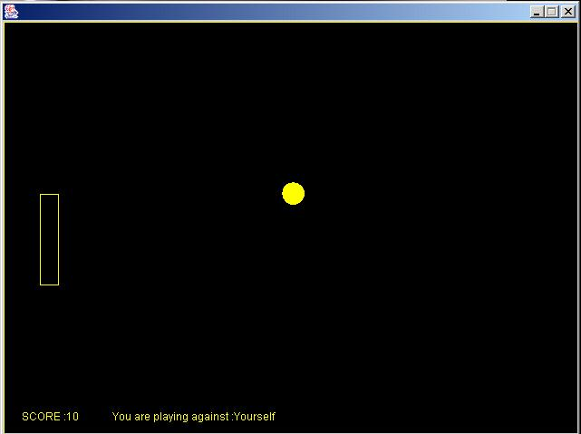
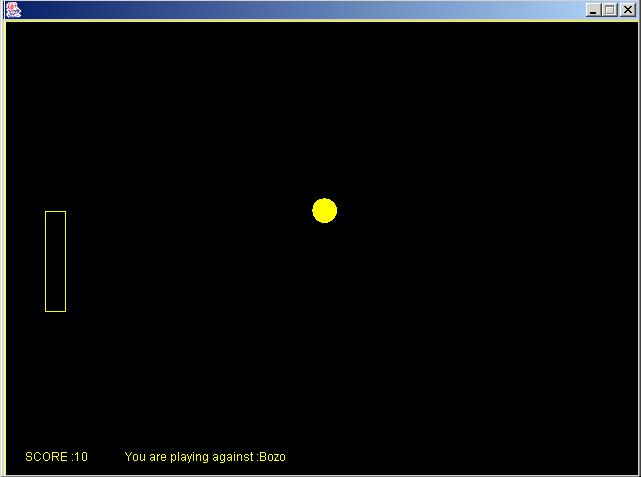

Goal of this example:
This example application launches sfPong game for single player and two players.
Internal Functionality:
This example has three components:
1. The pongplayer component that gives the description for a pongplayer
is described in file pongplayer.sf.
2. The game component that starts the pong game for two palyers is
described in file game.sf.
3. The singleplayer component that starts the pong game for a single
palyer is described in file singleplayer.sf.
All the objects in the game are obstacles, so walls, ball and racket objects all derive from the same class though they implement slightly different behaviours (e.g. walls are mostly immobile).These classes are Mass.java, Obstacle.java, Immobile.java, Ball.java and Racket.java. We also have a player (Player.java) who controls the racket, and one or two GUI objects to hold the whole thing together. All these are derived from the same class GameArenaWrapper.java and GameFrame.java. A special remote interface Linker.java allows the wrappers (specifically, their RMI stubs) to communicate. This interface allows one player to tell the other player that the ball is entering its side. The GameArenaWrapper class implements this interface.
Steps to run the game:
Scenario 1(Single player):
- Start daemon
on
localhost
- Start
singleplayer.sf
- Stop daemon
Expected Output:
The game starts and the player can play the game using arrow keys on the keyboard.

Scenario 2 ( Two players):
- Start daemon
on
localhost
- Start game.sf
- Stop daemon
Expected Output:
The game starts and displays separate windows
for both the players. The players can play the game using arrow keys on
the keyboard.
